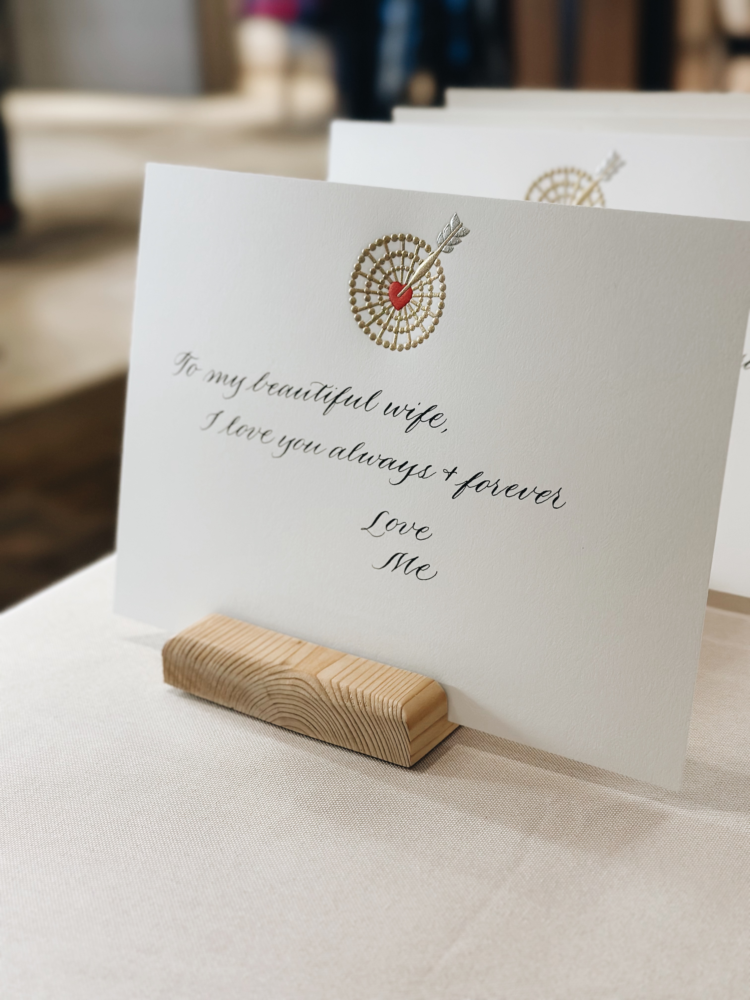
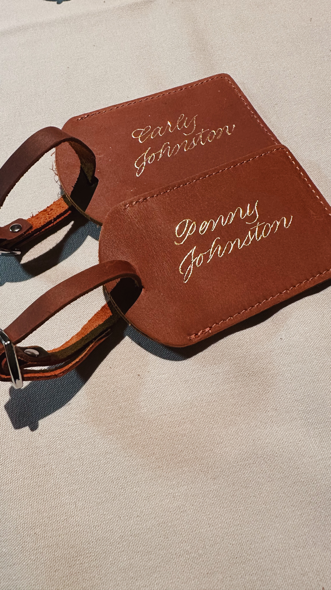
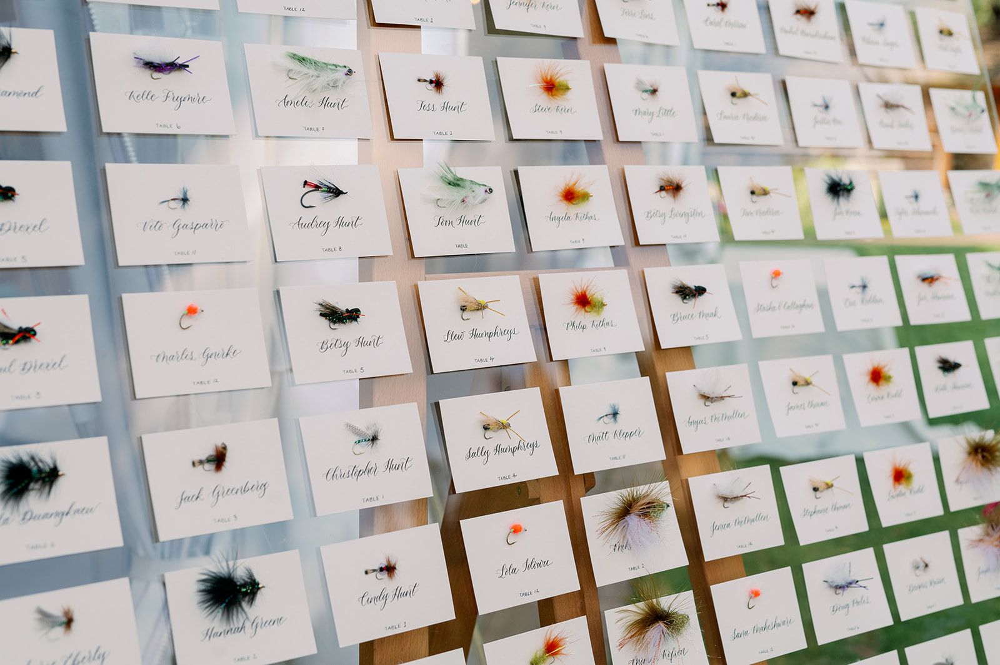

There's nothing like seeing calligraphy done live. Book an on-site experience to leave a lasting impression with your guests and clients.
There's nothing like seeing calligraphy done live. Book an on-site experience to leave a lasting impression with your guests and clients.



How you would like calligraphy to fit into your event is entirely up to you. Sometimes, it is one of several guest experiences. Or, it can be the highlight of the show. I can also work with you to put together a plan that complements your concept and figure out logistics on how to make it a reality on-site.
Some popular ways clients have incorporated calligraphy into their events include handwritten notecards, engraving, hot foiling, and bottle writing. But if you have another idea, let's do it!
There's nothing like seeing calligraphy done live. Book an on-site experience to leave a lasting impression with your guests and clients.
To get an idea of what the live calligraphy experience is like, take a look at past event recaps.
How it works
Bookings start at a minimum of 3 hours and time can be extended as needed. Setup and cleanup time should be accounted for as well. My hourly rate is $200, and a travel fee may apply depending on where the event is located.
I like to keep my workspace tidy and organized, so I will usually bring only the essential calligraphy tools required for the engagement with any backup equipment if there are any malfunctions. This can include pens, ink, laser liners, engravers, hot foiling pens, and a few cleaning supplies.
Often clients will have supplementary materials specific to the event provided on-site, or they can sent to my studio and I bring them with me.
Typically I can complete about 20-30 handwritten items and 15 engraved or hot foiled items within an hour. If you have a large guest count, I recommend hiring a team of calligraphers to ensure all items can be completed within the event duration. I can help assemble a team of calligraphers as well!

Ready to start your project? Get in touch today